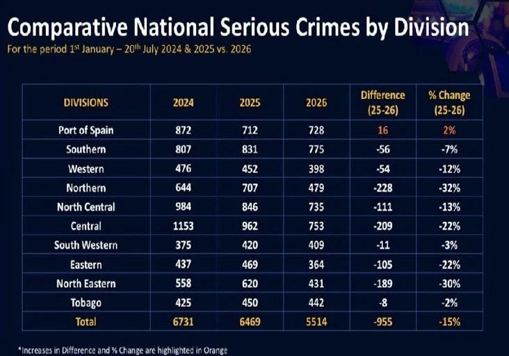

Introduction
For the past two years, two separate administrations have enacted three states of emergency in Trinidad and Tobago. Under these states of emergency (SOEs), the police can arrest anyone without a warrant, using any degree of force that they deem necessary. Under these SOEs, the Minister of Homeland Security can detain anyone indefinitely. In theory, under these SOEs, citizens’ rights are suspended to buy the government time to return the country to a sense of normalcy [2][3][4]. Yet, if SOEs are declared so frequently, how effective can they really be?
When the government of Trinidad and Tobago (TnT) declares a state of emergency to combat gangs, my gut says that it is swinging a hammer at a sponge. They only succeed in compressing the problem, which then rebounds. My gut cannot deliver a fair judgement, however, so another tool is needed to determine how the government of Trinidad and Tobago should be judged for their repeated declaration of a state of emergency. Their policy should be judged on its outcomes. In this series, I intend to uncover those outcomes.
The Plan

Definitive causal analysis is very difficult to do. Trends that occur at the same time are not proof that one causes the other. Thus, the observation that serious crime has fallen by 15% in TnT, during the first half of 2026 as compared to 2025 [5], amidst ongoing SOEs, is not proof that a state of emergency caused crime to drop. I am certain that more people watched football during the first half of 2026 than 2025, but that is almost certainly because of the World Cup and not the ongoing SOE.
To prove that a state of emergency directly affects crime rates, a testable theory of how these things relate is required. I present two of these.
Theory 1: Costly Signalling
When the TnT government declares an SOE, it signals that committing violent crimes is now more costly. Criminals, as strategic actors, consider that they have less legal protections and that police have less red tape to cut through. Criminals determine that the new risk associated with some crime is too high and avoid committing them.
During an SOE, a criminal’s strategic calculations drive the reduction in crime rates. When the state of emergency is lifted however, the costs are lowered, and criminals respond by returning to their baseline crime rates.
Theory 2: Network Disruption
When the TnT government declares an SOE, it grants its national security apparatus more power to pursue criminals. The apparatus then uses its power to arrest/detain criminals, preventing them from committing crimes or facilitating them.
During an SOE, removal of key actors from criminal networks drives a temporary reduction in crime rates. The magnitude and duration of this reduction depends on how key the actor is to that criminal network. When the state of emergency is lifted, criminal networks become more stable due to less government disruption, allowing crime to return to its baseline rate.
Testing theory 1 requires gathering information about criminal decision making, suggesting a need for qualitative interviews. I do not have those resources or capabilities. Testing theory 2 is much more feasible.
During the SOEs, the Minister of Homeland Security can detain anyone under a preventative detention to prevent them from “acting in any manner prejudicial to public safety… .” When the Minister does so, they issue a dated preventative detention order that includes the residence of the person being detained. From this, I intend to construct a spatial-temporal dataset of all preventative detentions throughout the SOEs. By comparing this dataset with a spatial-temporal crime dataset, I can determine whether or not SOEs cause a reduction in crime rates.
If theory 2 is true, then the execution of a preventative detention order should cause crime to decrease in the area near the detainee’s residence. The effect of any preventative detention order should only be temporary because any criminal actor is only a node in the crime network. Networks can adapt. Low level actors may easily be replaced. The removal of high level actors on the other hand may disrupt crime in the short term while causing worse outcomes in the future due to power vacuums. On average, however, I expect to see a brief decrease in violent crime, followed by a return to baseline crime rates with a potential uptick due to power vacuums.
Next Steps
As outlined, a spatial-temporal dataset of all preventative detention orders from 2025 - present will be constructed based on public records, forming the independent variables. The dependent variables, crime rates, will be obtained from two spatial-temporal crime datasets: one published by the Trinidad and Tobago Police Services [6] and another by Crime Hot Spots [1], an unaffiliated, independent research project.
In the articles to follow, I will explain my intended methodology and preliminary findings.
References
Sources
- Crime Hotspots. https://crimehotspots.com/
- The Emergency Powers Regulations, 2024 (Legal Notice 240 of 2024). https://printery.gov.tt/e-gazette/2024/Legal%20Notices/Legal%20Notice%20No.%20240-Emergency%20Powers%20Regulations,%202024.pdf?ref=law.martingeorge.net
- The Emergency Powers Regulations, 2025 (Legal Notice 241 of 2025). https://www.ttlawcourts.org/attachments/article/14359/LN2025-241.pdf
- The Emergency Powers Regulations, 2026 (Legal Notice 40 of 2026). https://www.ttlawcourts.org/attachments/article/15137/LN2026-40.pdf
- Trinidad Express: "Serious crime falls 15%". https://trinidadexpress.com/news/local/serious-crime-falls-15/article_ee6ec37e-a60b-403a-b68b-f0ff42092681.html
- TTPS Crime Statistics. https://www.ttps.gov.tt/statistics/